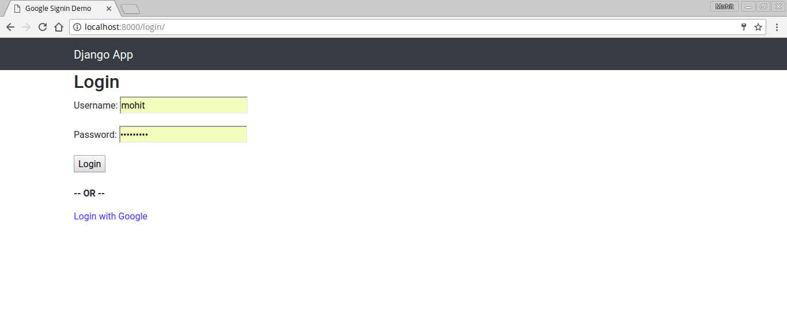
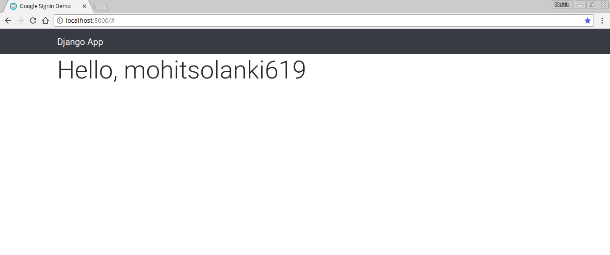
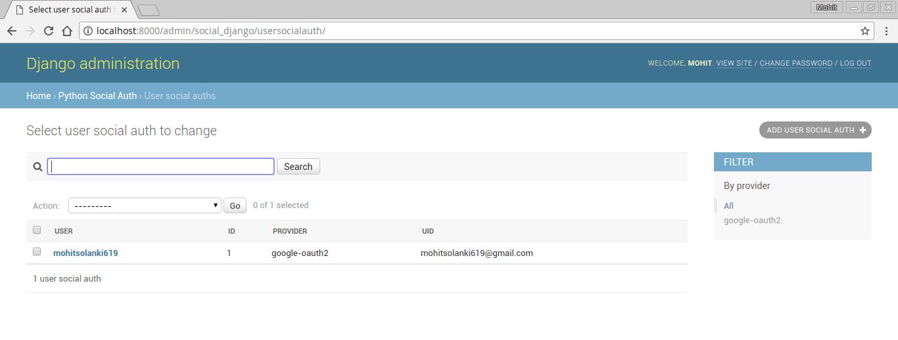

In this blog post, we will implement social login in a with Google,Facebook, Github in Django application by using social-auth-app-django which seems to be the best alternative to the deprecated library python social auth
So first let's get done with the installation part with pip or easy_install
pip install social-auth-app-django
Now add social_django to your INSTALLED_APPS in settings.py file
INSTALLED_APPS = [
'django.contrib.admin',
'django.contrib.auth',
'django.contrib.contenttypes',
'django.contrib.sessions',
'django.contrib.messages',
'django.contrib.staticfiles',
'social_django' # <- Here,
....
]
Now migrate the database.
python manage.py migrate
Operations to perform:
Apply all migrations: admin, auth, contenttypes, sessions, social_django
Running migrations:
Applying social_django.0001_initial... OK
Applying social_django.0002_add_related_name... OK
Applying social_django.0003_alter_email_max_length... OK
Applying social_django.0004_auto_20160423_0400... OK
Applying social_django.0005_auto_20160727_2333... OK
Applying social_django.0006_partial... OK
Applying social_django.0007_code_timestamp... OK
Applying social_django.0008_partial_timestamp... OK
This library will do all the heavy lifting for you like authentication tokens and all the required information to deal with OAuth and OAuth2.
Configuration
We need to add few things to our settings.py file to make it work
First, update context_processors inside templates
TEMPLATES = [
{
'BACKEND': 'django.template.backends.django.DjangoTemplates',
'DIRS': [os.path.join(BASE_DIR, 'templates')],
'APP_DIRS': True,
'OPTIONS': {
'context_processors': [
'django.template.context_processors.debug',
'django.template.context_processors.request',
'django.contrib.auth.context_processors.auth',
'django.contrib.messages.context_processors.messages',
'social_django.context_processors.backends', # <- Here
'social_django.context_processors.login_redirect', # <- Here
],
},
},
]
Now add the AUTHENTICATION_BACKENDS
AUTHENTICATION_BACKENDS = (
'social_core.backends.open_id.OpenIdAuth', # for Google authentication
'social_core.backends.google.GoogleOpenId', # for Google authentication
'social_core.backends.google.GoogleOAuth2', # for Google authentication
'social_core.backends.github.GithubOAuth2', # for Github authentication
'social_core.backends.facebook.FacebookOAuth2', # for Facebook authentication
'django.contrib.auth.backends.ModelBackend',
)
I have added all authentication backends but you need to specify the one you need, for Google specify the first three.
Be sure to add the 'django.contrib.auth.backends.ModelBackend', at the end, It ensures the user will still able to login via Django auth Model backend.
Update the urls.py add the social-auth-app-django urls:
from django.conf.urls import url, include
from django.contrib import admin
from django.contrib.auth import views
from .views import home
urlpatterns = [
url(r'^admin/', admin.site.urls),
url(r'^login/$', views.login, name='login'),
url(r'^logout/$', views.logout, name='logout'),
url(r'^auth/', include('social_django.urls', namespace='social')), # <- Here
url(r'^$', home, name='home'),
]Make sure to specify LOGIN_URL, LOGIN_REDIRECT URL in settings.py. LOGIN_REDIRECT_URL will be used to redirect the user after authenticating from Django Login and Social Auth.
LOGIN_URL = 'login'
LOGIN_REDIRECT_URL = 'home'
where 'login' and 'home' are the names of URLs in urls.py file
At this point, we are all set up to add social authentication to our Django application.
Google Authentication
Get Google auth key and secret key.
Go to the Google Google Developers Console and then click on create button.
Enter project name e.g 'Django App'. Wait for a few seconds your project should be created
On the right side there is credentials tab, select it.
Click on Create Credentials then OAuth Client ID. Select the application type Web app, Give any name of your choice and Enter any name in 'Product name shown to users' under OAuth Consent Screen tab.
Enter the following URI's in Authorized redirect URIs
http://localhost:8000/auth/complete/google-oauth2/
http://127.0.0.1:8000/auth/complete/google-oauth2/
Remember 'localhost:8000' is just for testing purpose only, change 'localhost:8000' with your DOMAIN name in production.
Now click on library under the APIs and services tab and then search for google+, in the search results click on Google+ API and then click Enable.
Now, Copy the Client ID and Client Secret Under settings.py
SOCIAL_AUTH_GOOGLE_OAUTH2_KEY ='' #Paste CLient Key
SOCIAL_AUTH_GOOGLE_OAUTH2_SECRET = '' #Paste Secret Key
Github Authentication
Get Github auth key and secret key.
Log in to your GitHub account, go to Settings. In the left menu you will see Developer settings. Click on OAuth applications.In the OAuth applications screen click on Register a new application. Or simply click on the link Gitub New Application
Enter Application name e.g "Django App"
Homepage url - 'http://localhost:8000" (replace with your domain name in production)
Enter the following URI's in Authorization callback URL
http://localhost:8000/auth/complete/github/
http://127.0.0.1:8000/auth/complete/github/
#Note: Remember 'localhost:8000' is just for testing purpose only, change 'localhost:8000' with your DOMAIN name in production.
After creating the app you will be redirected to the screen where you will find Client ID and Client Secret. Grab them paste it in your settings.py
file
SOCIAL_AUTH_GITHUB_KEY = #Paste Client ID
SOCIAL_AUTH_GITHUB_SECRET = #Paste Secret Key
views.py
from django.shortcuts import render
def home(request):
return render(request, 'home.html')
home.html
{% extends "layout.html" %}
{% block content %}
{% if user.is_authenticated %}
<p class="display-4">Hello, {{ user.username }}</p>
{% else %}
<a class="lead" href="{% url 'login' %}">Log in</a>
{% endif %}
{% endblock content %}
Login View
Let’s create a Login View that can both handle Django Login and the Google Login. The default login view looks for a template in registration/login.html. Let’s create it
registration/login.html
{% extends "layout.html" %}
{% block content %}
<h2>Login</h2>
<form method="post">
{% csrf_token %}
{{ form.as_p }}
<button type="submit">Login</button>
</form>
<br>
<p><strong>-- OR --</strong></p>
<a href="{% url 'social:begin' 'google-oauth2' %}">Login with Google</a><br>
<p><strong>-- OR --</strong></p>
<a href="{% url 'social:begin' 'github' %}">Login with GitHub</a><br>
{% endblock %}
Note that the important part to start the Google authentication is
"{% url 'social:begin' 'google-oauth2' %}"And to start the Github authentication
"{% url 'social:begin' 'github' %}"
You can add "{% url 'social:begin' 'google-oauth2' %}" on SignUp page also and this will create an account
We are done, Now let's try our new Google Sign in.
At the moment our login page should look like this:

Now Login with Google and you will be redirected to the home page and your username will be displayed.

Login into admin panel and click on User Social auth, you will see user information.

Final Words
You can clone and run sample Django project if you have any problem in understanding the tutorial, here is GitHub link


blog comments powered by Disqus